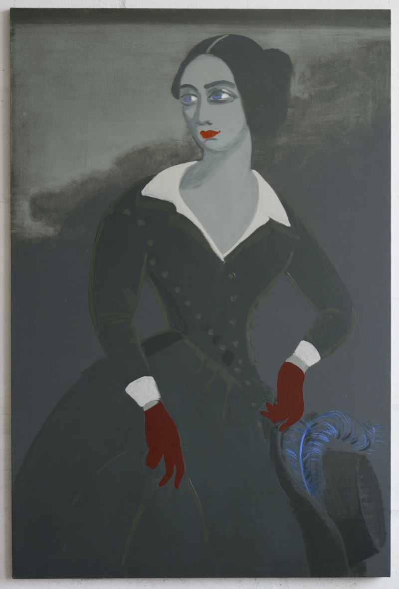

Here I explore the stories of high society women living in the times of Romanticism who were lovers of famous contemporary men: Balzac, Chopin, Hugo, Liszt, Byron. They created a peculiar web of sexual relationships where each woman (among them: George Sand, Rachel Felix, Lola Montez) was linked to another through their mutual lovers. Thus, a constellation of lovers had emerged — mysterious, complex and entangled.
Oil, acrylic, egg tempera, water colour and marble dust on linen (2014)
"Maria Walewska"
110×110 cm, acrylic and marble dust on linen (2014)
"Rachel Felix"
90×60 cm, acrylic, oil, egg tempera and marble dust on linen (2014)
"George Sand"
60×90 cm, acrylic, marble dust and oil on linen (2014)
"Ewelina Hanska"
100×80 cm, acrylic, oil and marble dust on linen (2014)
"Delfina Potocka"
Oil in linen (2014)
"Lola Montez"
60×90 cm, marble dust and oil on linen (2014)

Untitled
Oil in linen (2014)
"Anais Aubert"
Oil on linen (2014)
"Apollonie Sabatier"
Oil and marble dust on linen (2014)
"Laura d'Abrantes"
Oil on linen (2014)
Untitled
Oil and marble dust on linen (2014)
"Delfina Potocka"
27.5×25 cm, oil on linen (2012)
"Lola Montez"
120×100 cm, egg tempera and water colour on linen (2012)
"Aimee Desclee"
46×38 cm, oil on canvas (2012)
Untitled
25×20 cm, oil on glass (2012)
"Flowers for George Sand"
40.5×30.5 cm, oil on canvas (2012)
"Lola Montez"
Oil on linen, porcelain cameo (2012)
"Marie Duplessis"
24×18 cm, oil on linen cutouts on linen (2012)
"Lola Montez"
56×44 cm, oil on linen (2011)
"Lola Montez"
35.5×27.5 cm, oil on glass and paper, multiple layers (2011)
"Apollonie Sabatier"
27.5×21.5 cm, oil on linen (2011)
"Flowers for Karolina Sobanska"
30.5×25.5 cm, oil on canvas (2011)
"George Sand"
40×30 cm, oil on linen (2011)
"Anais Aubert"
Marble dust, acrylic and ink on linen (2015)
Here I explore the stories of high society women living in the times of Romanticism who were lovers of famous contemporary men: Balzac, Chopin, Hugo, Liszt, Byron. They created a peculiar web of sexual relationships where each woman (among them: George Sand, Rachel Felix, Lola Montez) was linked to another through their mutual lovers. Thus, a constellation of lovers had emerged — mysterious, complex and entangled.
19th Century women — aristocrats, writers, actresses, models, courtesans — and the stories of their lives are remembered in history only through their intimate relationships with the prominent men of that time. All portrayed women craved personal freedom and social appreciation, but in pursuit of it they had to rely on male lust and love. Bringing their stories back from the past (and being forgotten), I want to explore and depict 19th Century womens' struggle for individuality.